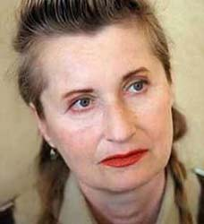

Elfrinde Jelinek [1946]
Sau khi nhận tin mình đoạt giải Nobel tại nhà riêng ở thành phố Vienna, Jelinek [Sinh 1946].nói với phóng viên Đài phát thanh Thụy Điển rằng mình rất “bất ngờ” và đấy là “một vinh dự lớn lao”. Nhưng nhà văn kín tiếng này lại cho biết bà không thể đến Stockholm để nhận giải. Bà giải thích rõ hơn với phóng viên hãng Reuters: “Về mặt tinh thần, tôi không thể chịu đựng được việc đó. Tôi rất ghét việc chường mặt ra với mọi người và không chịu nổi những chỗ đông người như vậy. Nhưng nhất định tôi sẽ viết một bài phát biểu”.
Mặc dù Jelinek né tránh sự xuất hiện trước công chúng, tên tuổi của bà đã rất quen thuộc ở các nước Áo và Đức. Những tác phẩm của bà, từ thơ, tiểu thuyết, kịch, nhạc kịch, với cái nhìn bi quan sâu sắc về thân phận con người, đã biến bà trở thành một thứ thần tượng. Đồng thời, bà là một người chống đối kịch liệt Đảng Tự do, một đảng cực hữu ở Áo, và đã rút những vở kịch của mình ra khỏi sân khấu sau khi đảng này tham gia chính phủ năm 2002.
Ngoài thế giới nói tiếng Đức, Jelinek không mấy nổi tiếng, mặc dù một số tác phẩm của bà đã được dịch ra tiếng Anh, Pháp và Thụy Điển. Bốn cuốn truyện nổi tiếng nhất gồm Người dạy dương cầm, Những thời đại diệu kỳ, Nhục dục và Đàn bà với tư cách người tình đã được dịch ra và xuất bản ở London. Peter Ayton, chủ NXB Serpent’s Tail, nơi in các tác phẩm của Jelinek, nhận xét rằng bà là nhà văn “cực kỳ sáng tạo cả về nội dung lẫn hình thức. Ngoài ra bà còn rất phiêu lưu và luôn luôn làm những việc điên rồ và kỳ diệu trong thể loại tiểu thuyết”.
Năm 21 tuổi (1967), Jelinek cho in một tập thơ có tựa đề Lisas Schatten. Nhưng bước ngoặt quan trọng trong sự nghiệp sáng tác của Jelinek là sau khi bà tham gia phong trào sinh viên lan rộng khắp châu Âu trong những năm 1970 với thiên truyện châm biếm Bé cưng, chúng ta là những con chim mồi. Người dạy dương cầm, một trong những thiên truyện “màu xám” của Jelinek đã được chuyển thể thành bộ phim cùng tên của đạo diễn Michael Haneke năm 2001 nói về một cô giáo tên là Erika làm nghề dạy phụ đạo hay đòi hỏi, chịu trách nhiệm kèm cặp cho một sinh viên trẻ hơn mình. Ở đây, tác giả miêu tả một thế giới tàn nhẫn của bạo lực và sự phục tùng, của người đi săn và con thú bị săn đuổi. Erika tìm cách để trốn khỏi bà mẹ nghiệt ngã của mình thông qua tình dục bệnh hoạn, làm độc giả và khán giả bị sốc trước bạo lực tình dục đó. Trong một điểm sách, tờ New York Times cho rằng đấy là “cách nhìn không khoan nhượng của nhà văn”.
Tác phẩm Thời đại diệu kỳ, thật diệu kỳ được liệt vào loại hư cấu triết học là câu chuyện của 5 thanh niên ở thành phố Vienna thời hậu chiến nằm trong móng vuốt của sự vô nghĩa và chọn việc dùng bạo lực đối với kẻ khác làm lối thoát.
Với một sự hăng hái đặc biệt, Jelinek đã kịch liệt chỉ trích đất nước mình, miêu tả nó như một thế giới của chết chóc trong thiên truyện đầy ảo giác Die Kinder Der Toten khiến bà đến nay vẫn là một nhà văn gây nhiều tranh cãi nhất ở Áo.
Về văn phong, bà thừa kế một truyền thống lâu đời của văn học Áo, đặc biệt là khuynh hướng hiện thực phê phán rất tinh tế về mặt ngôn ngữ học. Những tiền bối của bà là Johann Nepomuk Nestroy, Karl Kraus, Odon Von Horvath, Elias Canetti, Thomas Bernhard và Nhóm Wiener.
Trong công bố trao giải, Viện Hàn lâm Hoàng gia Thụy Điển nhật xét: “Bản chất những tác phẩm của Jelinek thường khó xác định. Nó chuyển dịch giữa văn xuôi và thơ, những câu thần chú và thánh ca, bao gồm cả những màn kịch sân khấu và những trường đoạn phim”.
Những tác phẩm gần đây của bà là các biến thể trên những chủ đề cơ bản: Cái xem ra là sự bất lực của nữ giới trong việc tìm ra bản thân mình một cách đầy đủ và theo đuổi cuộc sống trong một thế giới mà họ được “đánh bóng” bởi những khuôn mẫu xơ cứng và trở thành chính những khuôn mẫu đó.
Vở kịch mới nhất của Jelinek Bambiland, viết năm 2003 và dịch sang tiếng Anh năm 2004 là một cuộc tấn công trực diện chống lại việc Mỹ chiếm đóng Iraq.
Là một nhà văn được coi là người đấu tranh cho nữ quyền, ủng hộ đường lối chính trị cánh tả và theo chủ nghĩa hòa bình, có lần Jelinek bộc bạch: “Khi cầm bút viết, tôi luôn cố sức đứng về phía những kẻ yếu. Phía của kẻ mạnh không phải là chỗ đứng của văn học”.
Elfriede Jelinek đau nỗi đau cuộc sống và giễu cợt sự bất lực của mình không dám kết thúc nó. Bà viết trong những cơn say của giận dữ với sự trợ giúp của những viên thuốc bổ thần kinh. Nữ nhà văn đoạt giải Nobel Văn học 2004, một người có cuộc sống khác thường, suy nghĩ khác thường và tài năng khác thường, dường như có một khát vọng cháy bỏng: Một cuộc sống bình thường.
* Thưa bà Jelinek, bà đã phát biểu là hầu như không biết mình đoạt giải Nobel và rằng mình không xứng đáng được nhận nó. Song nếu những người khác nói điều tương tự thì điều ấy sẽ khiến bà bị tổn thương.
– Quả là tôi đã hoàn toàn tin rằng lần này sẽ tới lượt Peter Handke, một nhà văn kinh điển.
* Đúng, nhưng những người khác thì không được phép phản đối bà.
– Điều đó giống như anh bị tàn phế và phải ngồi trong xe lăn thì không ai được phép gọi anh là phế nhân, song tự anh nói vậy thì được. Tôi được phép nói như thế. Những người khác thì không!
* Tòa thánh Vatican đã tỏ ra búc xúc khi, như cách gọi của họ, một người đàn bà “điên loạn, hư vô” lại được nhận giải Nobel.
– Tôi thấy điều đó là đặc biệt tồi tệ, bởi thực ra Vatican cần phải đứng về phía những người yếu đuối và bệnh tật kia mà. Lẽ ra họ nên bảo: “Hãy để cho người đàn bà đáng thương đó được yên, bà ấy không thể làm khác. Thật tốt đẹp khi bà ấy được nhận giải, cả khi những gì bà ấy viết là hư vô”. Vatican phải ủng hộ những người khốn khổ chứ! Xét từ góc độ của cái thiện, tôi thấy điều đó là cực kỳ không “công giáo”.
* Nhà văn Martin Mosebach đã gọi bà là “một trong những người ngố nhất Tây bán cầu”.
– Tôi thấy thú vị, bởi vì ông ấy đã điềm nhiên nói ra một từ chân thực. Tôi đúng là ngố. Chỉ có điều ông ta hoàn toàn không thể biết điều đó vì ông ấy đâu biết tôi.
* Nếu ai đó gọi bà là người thông minh…
– …Thì tôi không tin điều đó. Tôi biết mình không thông minh. Ví như anh không thể tranh luận với tôi vì tôi không đủ thông tuệ để ngẫm cho tới cùng một suy nghĩ. Cách đây không lâu, truyền hình đã mời tôi tham dự một buổi tranh luận triết học. Tôi đã trả lời rằng: “Tôi lấy làm tiếc, tôi ngô nghê như ổ bánh mì, tôi không thể”.
* Bà nói câu ấy với một nụ cười?
– Đúng, nhưng sự thực nụ cười của tôi là một sự khẩn nài. Con vật nhe răng vì mong được tha tội.
* Thế thì bà đã thất bại: Càng tự hạ thấp mình bà càng bị công kích mạnh hơn.
– Đúng, anh có thể giải thích điều ấy cho tôi chăng?
* Có thể là một số người đã không chịu được việc bà đã đạt được tất cả những gì người ta có thể đạt được, và mặc dù vậy vẫn không vui. Được hỏi liệu có muốn chúc mừng bà Jelinek đoạt giải hay không, nữ thi sĩ Friederike Mayroecker đã trả lời: “Tôi không hào phóng đến thế”.
– Điều ấy khiến tôi ngạc nhiên. Nếu là mình, có lẽ tôi sẽ vô tư mà vui mừng nếu chị ta đoạt giải, vì tôi nghĩ: Ơn Chúa là ta không đoạt giải. Tôi đã biết từ vài năm nay rằng mình đang có tên trong một danh sách, và hàng ngày cầu nguyện cho sức khỏe của Handke. Tôi đã cầu nguyện cho ông ấy không chết hay không ốm, hoặc không phát biểu chút gì đó về Serbia.
* Được trao tặng giải thưởng văn học cao quý nhất thế giới lại thật sự tồi tệ đến thế sao?
– Một mặt, tất nhiên là tôi cảm thấy vinh dự. Một người thợ giày đúng là cũng vui mừng khi công việc của mình được ghi nhận. Mặt khác, nó là một cực hình đối với tôi, bởi vì tôi muốn có sự yên tĩnh của mình. Hiện thời tôi hầu như không dám ra khỏi nhà. Tôi vốn phải dùng các phương tiện giao thông công cộng vì không có xe riêng. Bây giờ tôi không thể đi lại bằng tàu điện ngầm nữa vì không chịu được việc bị người lạ bắt chuyện…
* Nếu muốn có sự yên tĩnh của mình, bà cũng không nên trả lời phỏng vấn và xuất hiện trên truyền hình.
– Đúng thế. Tôi đã kháng cự quá yếu ớt. Tôi đã quá hay “a tòng”, từ một phản xạ thuần phục vô thức, một tính cách mà tôi đã được rèn luyện bởi người mẹ đặc biệt hách dịch và quyền uy của mình.
* Qua tiểu thuyết Cô giáo dạy dương cầm, bà đã ngầm mô tả mối quan hệ phức tạp với mẹ mình. Hai mẹ con bà sống cùng nhà và viết là giải pháp trốn chạy của bà?
– Viết là con thuyền cứu sinh của tôi, nhưng nó đã không giải phóng được tôi. Ngay từ lúc còn rất nhỏ tôi đã như một con vật bị cột chặt vào người đàn bà ấy, người luôn có một uy quyền tuyệt đối đối với tôi. Kể từ sau khi bà mất, một số cái đã thay đổi, song tôi vẫn không nhờ thế mà trở nên khỏe mạnh. Nỗi sợ ngày một lớn hơn, thay vì nhỏ đi.
* Nỗi sợ nào?
– Đó là một dạng đặc biệt ở hội chứng agoraphobie, sợ đứng trước một đám đông. Hồi còn là một cô bé, tôi đã từng không ra khỏi nhà trong suốt một năm, và từ nhỏ đã là một người bệnh, vì tôi thường chạy tới chạy lui trong phòng và đập đầu vào tường như một con điên. Bác sĩ điều trị đã bảo rằng bằng cách ấy tôi muốn thoát khỏi sức ép mà tôi phải chịu đựng. Đó không phải là những khoảnh khắc đẹp.
* Bà đã được chữa khỏi?
– Đến nay thỉnh thoảng tôi vẫn làm như vậy nhưng không tới mức thái quá. Tôi không còn đập đầu vào tường nữa. Khi ấy như thể có gì đó bốc lên trong tôi, một cơn điên giận, nhưng hôm nay nó chính là cái thôi thúc tôi phải viết. Viết - đối với tôi đúng là một hoạt động say mê, một kiểu thịnh nộ. Tôi không phải là người dùng câu chữ thật đắt như Thomas Mann, mà đơn giản là tôi “bằm đi bằm lại” chúng. Cứ như thế hai đến ba tiếng đồng hồ, và sau đó tôi suy sụp, giống như một miếng trứng rán phồng bị kim châm xẹp xuống.
* Bà cũng chẳng vui gì qua việc viết?
– Chẳng vui vẻ gì. Chỉ có điều, trong quá trình viết thi thoảng tôi rơi vào những trạng thái mà tôi không hoàn toàn còn có ý thức, một kiểu đê mê… Suy cho cùng thì hết thảy đều là công việc, thậm chí cả tình yêu.
* Tình yêu?
– Đúng, cả tình yêu giống như cái cách mà tôi mô tả nó. Cái mà những người khác diễn tả là những cảm xúc mạnh mẽ, sâu sắc thì ở tôi có gì đó mang tính máy móc giống như cơ cấu chuyển động của bánh răng, cuộn nối vào trong với nhau. Và tôi giằng, kéo nó ở trên bề mặt.
* Bà có nhớ những thời khắc hạnh phúc của mình?
– Tất nhiên! Tôi là một người rất nồng hậu và biết yêu, song tôi không viết về điều đó. Tôi viết về những gì hủy hoại, nhưng tôi cũng chỉ có thể viết được chúng vì tôi biết cái vế kia. Mọi người tra thêm gia vị vào những kỷ niệm lãng mạn của mình khi mặt trời lặn trên hòn đảo Mallorca. Nhưng ai làm những công việc bẩn thỉu? Tôi phải làm những công việc bẩn thỉu. Tôi dọn đi những thứ rác rưởi cảm xúc. Đó là nhiệm vụ của tôi. Trong văn học, tôi là người dọn rác, người đàn bà với các sọt rác. Tôi là cái sọt rác tình yêu.
* Nhà phê bình văn học Iris Radisch cách đây không lâu đã phê rằng bà chỉ cảm nhận được thế giới thuần túy từ truyền hình.
– Radisch đâu biết tôi. Tôi cũng không biết chị ta. Song tất nhiên là chị ta cũng thu nhận được thế giới của mình từ truyền hình, chỉ có điều chị ấy không nhận ra, đó là khác biệt. Khi chị ta bắt chéo cặp giò đẹp của mình trước camera, chị ta làm vậy vì đã trông thấy như thế trong một bộ phim. Quả là chẳng có gì xác thực. Những gì ngày nay chúng ta cho là thực tế, chỉ là một thứ “thực tế truyền hình”. Và tôi viết về điều này.
* Một trong những lý do Viện Hàn lâm Thụy Điển viện dẫn về việc trao giải Nobel cho bà là vì bà, với tư cách “một nhà phê bình xã hội can đảm”, đã biết cách diễn tả “sự bất lực của phụ nữ”, để vươn tới cuộc sống “trong một thế giới được phủ kín bởi những khuôn hình đúc sẳn”.
– Vâng, những khuôn hình của nam giới.
* Hình ảnh người phụ nữ, như bà nói, được xác định bởi nam giới.
– Vâng, tất cả phụ nữ chúng tôi đều phải qua cửa thẩm định của nam giới, và muốn vượt qua cái ngưỡng này, phụ nữ không đạt được thành tích kiểu nào đó, mà phải lao mình vào thị trường thân xác. Trước kia tôi thường hay nói đùa rằng dẫu là người phụ nữ đoạt giải Nobel hay là một nữ sinh tuổi 16 thì cũng chẳng quan trọng, hoặc là nam giới sẽ huýt gió theo, hoặc là họ sẽ réo gọi sau lưng “con lợn sề”. Bây giờ, bản thân tôi là người đoạt giải Nobel. Nhưng điều đó không làm tăng giá trị của tôi trong mắt cánh đàn ông, mà có vẻ ngược lại. Qua đó, đối với họ, tôi còn trở nên quái dị hơn.
* Bà nên thích ứng với việc mình là người có gì đó đặc biệt.
– Tôi không thể làm điều đó. Tôi cảm thấy những người có khả năng thu xếp ổn thỏa với cuộc sống là một số đông áp đảo mà tôi không nằm trong đó, và tôi phải nói rằng trong chuyện này tôi chẳng thấy có gì là tự hào. Lời nói danh dự của tôi đấy!
THỤC ANH